<>
Pierwszym "prawdziwym" komputerem, który kupiłem, był ATARI
800XL. W "Młodym Techniku" przeczytałem, że można sobie zrobić magnetofon, ale
to nie było takie proste. Próby wczytania programu ze zwykłego kaseciaka nie
dawały rezultatu - bo i jak? W końcu zdobyłem schemat magnetofonu 1010 w
serwisie Karen przy ul. Obrońców i poooszło! I to tak dobrze, że w końcu
zacząłem w tym serwisie pracować...
ATARI 1200XL
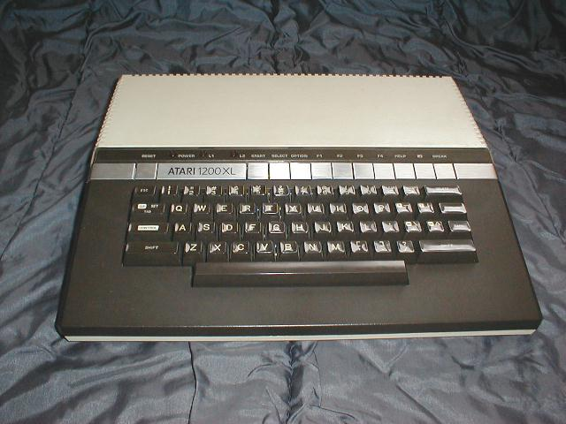
1200XL to pierwszy model z tej serii. Posiadał jeszcze wiele rozwiązań technicznych
charakterystycznych dla serii 400/800, jak brak wbudowanego BASICa, modulator czy wbudowany zasilacz.
Procesor 65C02 / 1.79MHz.
RAM 64kB.
ROM 16kB. Brak wbudowanego Basic'a.
Procesor graficzny ANTIC + GTIA.
Rozdzielczość maksymalna 320 X 192 w trybie monochrome
Grafika: 16 trybów graficznych, 16kolorów w 16 stopniach jasności
każdy (256 kolorów)
Tekst: 3 tryby tekstowe 40 i 20 kolumn w 24 liniach, 10 kolumn w
12 liniach.
Wyjście video: Composite luminance, Composite chroma, RF
modulator.
Porty: SIO, 2 gniazda joysticka, gniazdo kartridża.
Urządzenia peryferyjne dołączane do SIO
Dźwięk: czterokanałowy generator POKEY.
ATARI 600XL
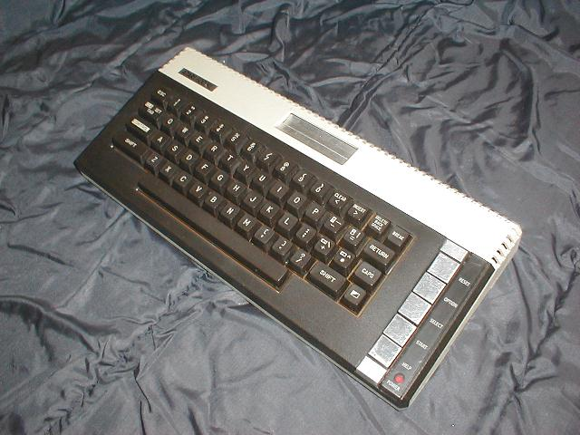
RAM 16kB łatwo rozszerzalna do 64 kB. Wbudowany Basic, w związku z
czym pamięć ROM powiększono do 24kB. Z tyłu komputera dodano złącze krawędziowe PARALLEL BUS
z wyprowadzonymi sygnałami systemu (niebuforowane). Pozostałe parametry jak w
1200XL.
ATARI 800XL
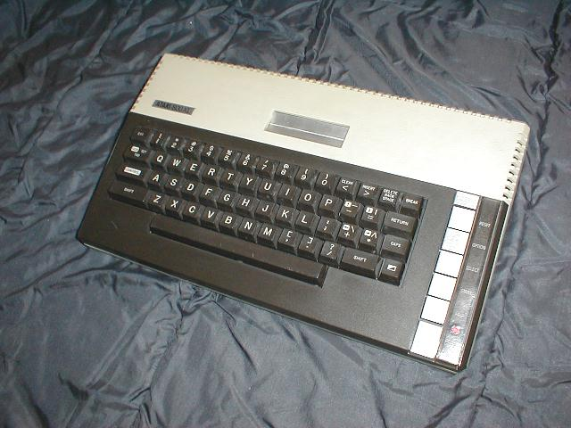
RAM 64kB. Pozostałe parametry jak w 600 XL.
Magnetofon ATARI 1010
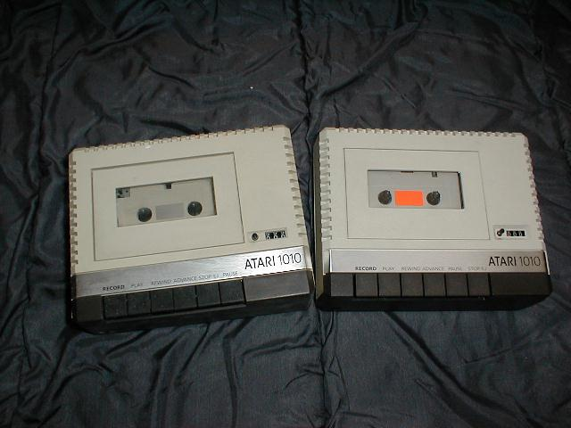
Magnetofony te również były produkowane w dwóch wersjach: chińskiej i
japońskiej. Na pierwszy rzut oka są jednakowe, ale po bliższym przyjrzeniu się widać
odwróconą kolejność klawiszy STOP/EJ i PAUSE.
W eksploatacji różnice są zauważalne od
razu: w chińskim nagminnie łamią się klawisze, spada pasek i pojawiają się częste błędy
odczytu.
Na zdjęciu z lewej 1010 chiński (Chelco), z prawej 1010S - japoński.
Stacja dyskietek ATARI 1050
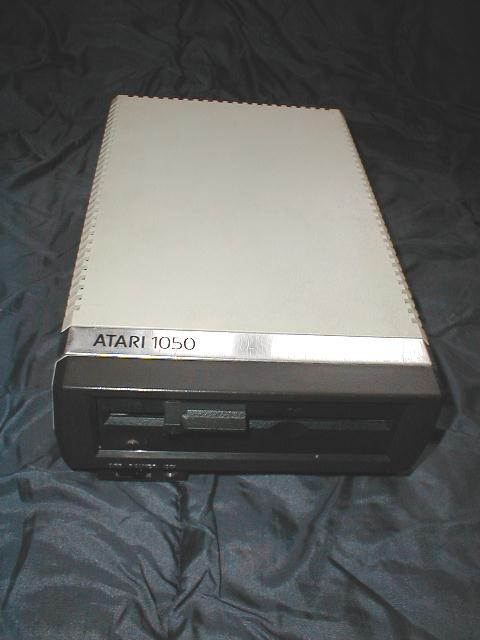
Stacja ta miała możliwość zapisu i odczytu w dwóch gęstosściach: pojedynczej
(S) i rozszerzonej (E).
Sprzedawana była z systemem DOS 2.5. W pierwszych latach sprzedaży komputerów Atari w Polsce
była podstawową stacją dysków i jedyną zgodną wzorniczo z linią XL.
Ploter ATARI 1020
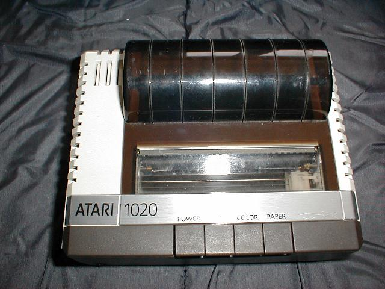
Konstrukcję plotera oparto na typowym mechanizmie stosowanym w ploterach do
komputerów innych marek.
Niestety - wadą tych mechanizmów jest pękanie zębników osadzonych na wałkach silników
krokowych, co jest uszkodzeniem trudnym do usunięcia z uwagi na ich małe rozmiary.
Drukarka ATARI 1025
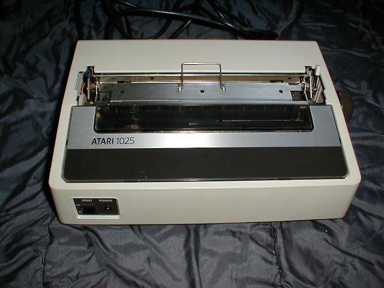
Prosta 80-kolumnowa drukarka tekstowa z głowicą 7 igłową drukującą na
papierze szer. 210 mm z perforacją lub z rolki. Taśma barwiąca od maszyny do pisania.
Częstą przyczyną uszkodzeń jest pęknięcie ścieżki masy prowadzącej do złącza
szeregowego.
Drukarka ATARI 1027
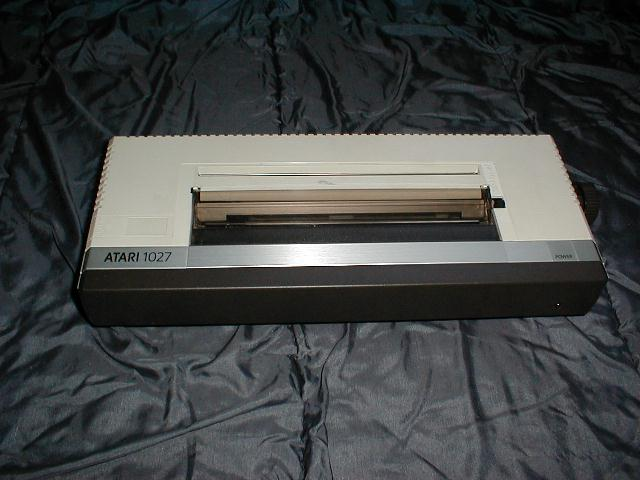
Drukarka znakowa z pionowym bębnem drukującym ze znakami ułożonymi w czterech
pierścieniach. Drukarka ta oferuje stosunkowo najlepszą jakość wydruku. Skomplikowany
sposób wyboru czcionki powoduje hałaśliwą, powolną i zawodną pracę urządzenia. Wadą jest brak
możliwości drukowania znaków diakrytycznych.
Najczęstszą przyczyną złego działania jest zacieranie się (z braku smaru) wózka bębna na prowadnicach
lub zakleszczenie bębna przez listwy rozdzielające pierścienie znakowe.
Drukarka ATARI 1029
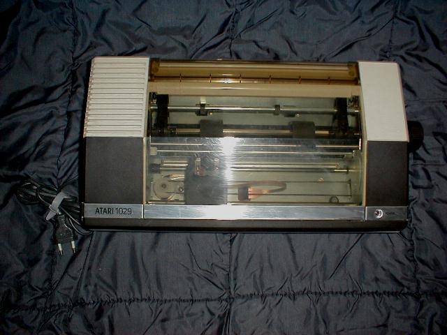
Jest to drukarka Seikosha GP500 w wersji dla Atari. Jest najszybszą drukarką
z prezentowanych tu modeli. Może drukować w trybie graficznym i tekstowym, łatwe jest też dostosowanie
jej do drukowania znaków diakrytycznych poprzez wymianę ROMu.
Częstym uszkodzeniom ulega głowica, czego przyczyną jest pękanie magnesu w niej umieszczonego.
Moduł RAM ATARI 1064
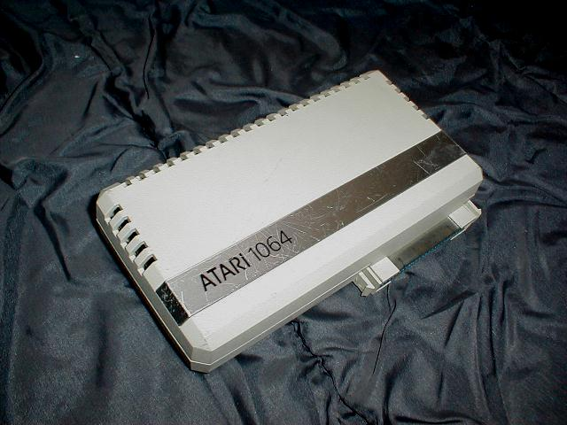
Moduł jest przeznaczony wyłącznie do komputerów Atari 600XL z pamięcią 16kB.
Jego podłączenie powoduje rozszerzenie RAM tego komputera do 64kB.
Modem ATARI 1030
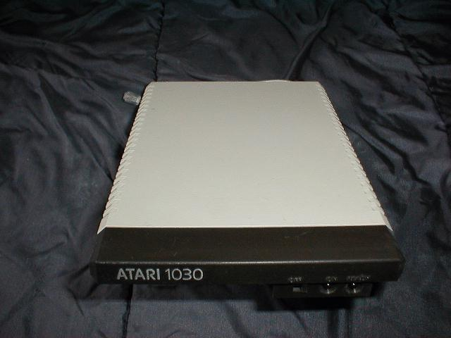
Jedyny modem zgodny wzorniczo z linią XL posiada wbudowane oprogramowanie obsługi połączeń. Szybkość 300 baud.